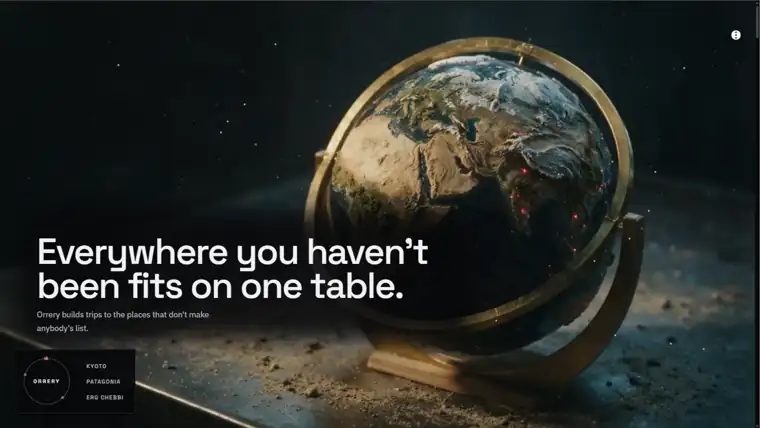
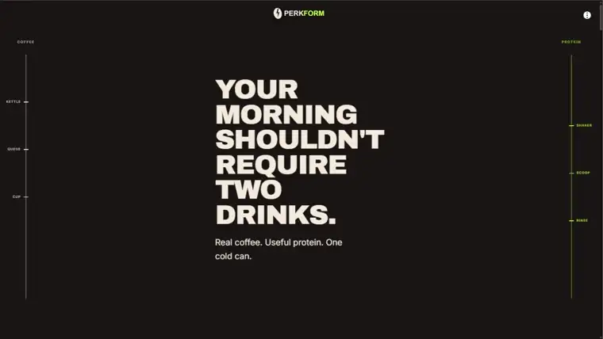
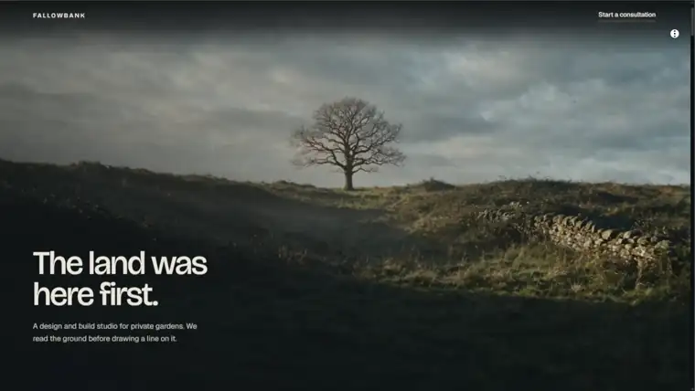

A Claude Code skill that builds premium scroll-driven websites and holds them to a real design standard, then tests its own work in a headless browser.
Same skill, same engine. Different page grammars, navigation, and endings.



Video scrubs under the wheel, sections pin while the argument advances, headlines assemble line by line.
Each one forbids what the others require, so two builds cannot quietly converge.
Every build invents one interaction that exists on that site alone.
A new build must differ from your past pages on at least 4 of 6 dimensions.
The peak gets the budget, the silence before it, and the most scroll room.
Two families, real measure, six colour roles, one accent, no pure black.
A headless browser walks the finished page at every scroll position and reports dead scroll, cues that never reach full opacity, contrast on the composited page, and clips stuck on a poster. Then it writes a contact sheet, because a machine can prove a page works and cannot tell you it means anything.
/plugin marketplace add nateherkai/scroll-craft /plugin install nateherk-design
Then describe what you want, or run /nateherk-design:scrollcraft.